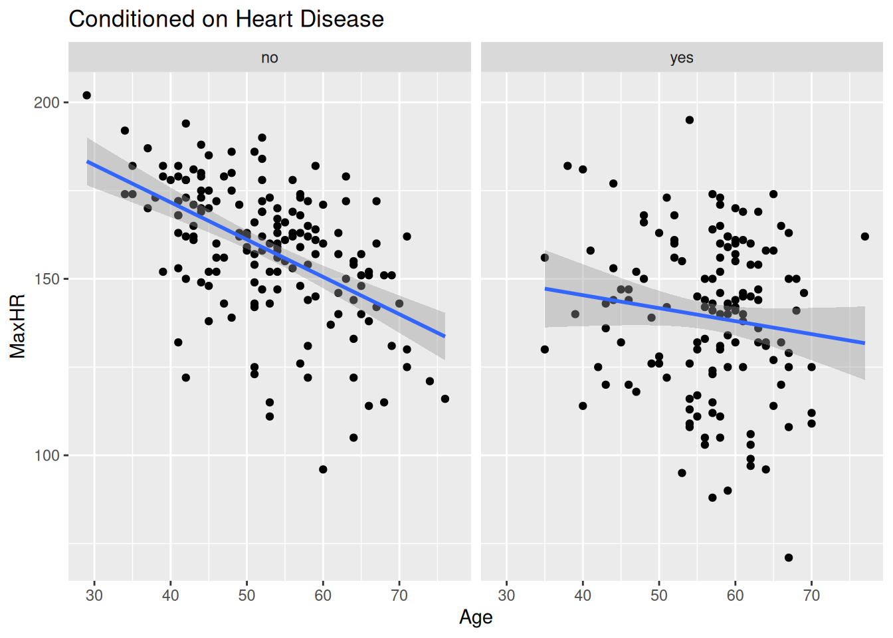
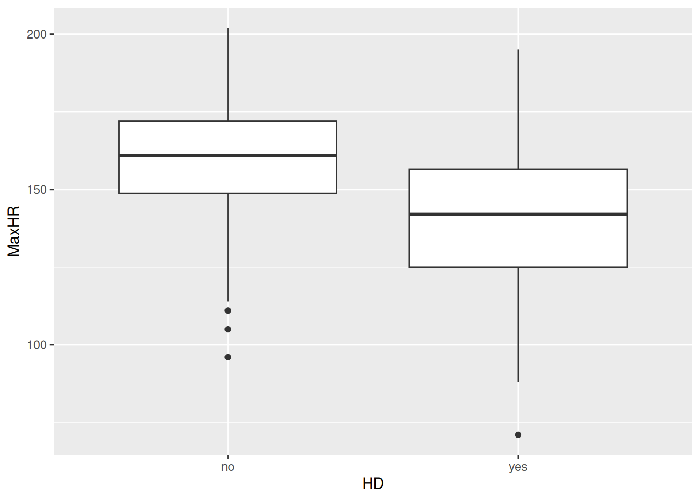
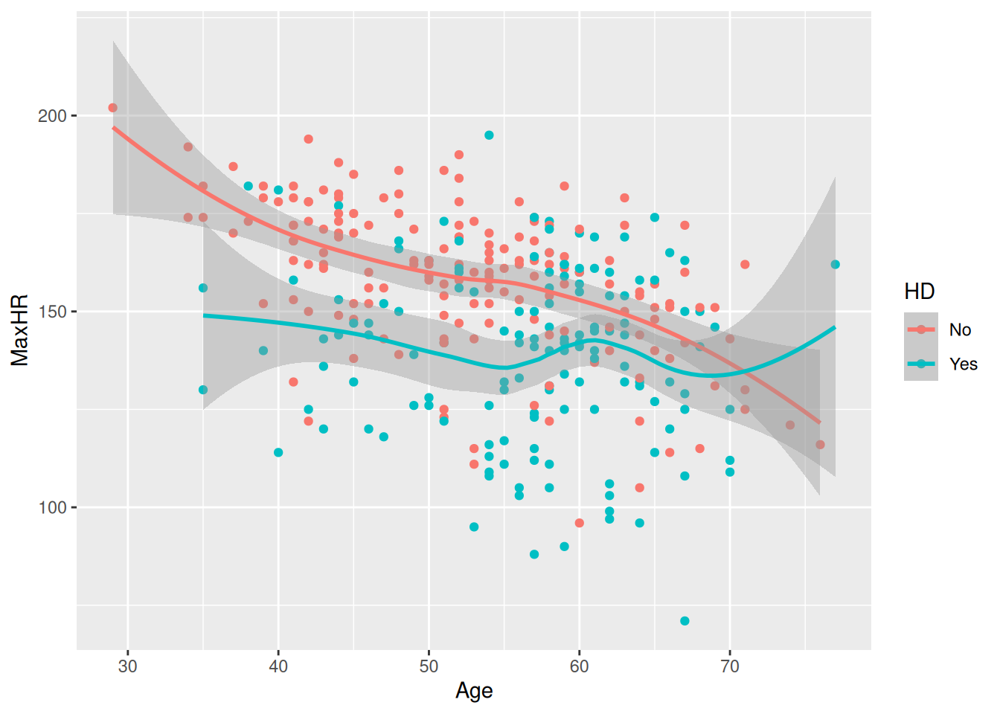
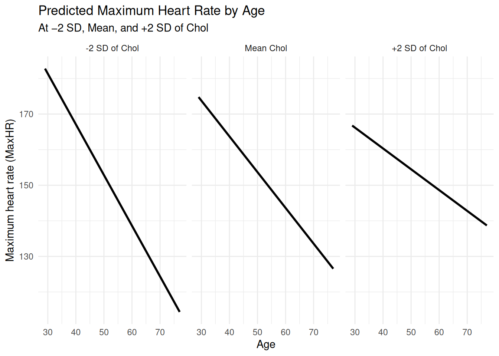
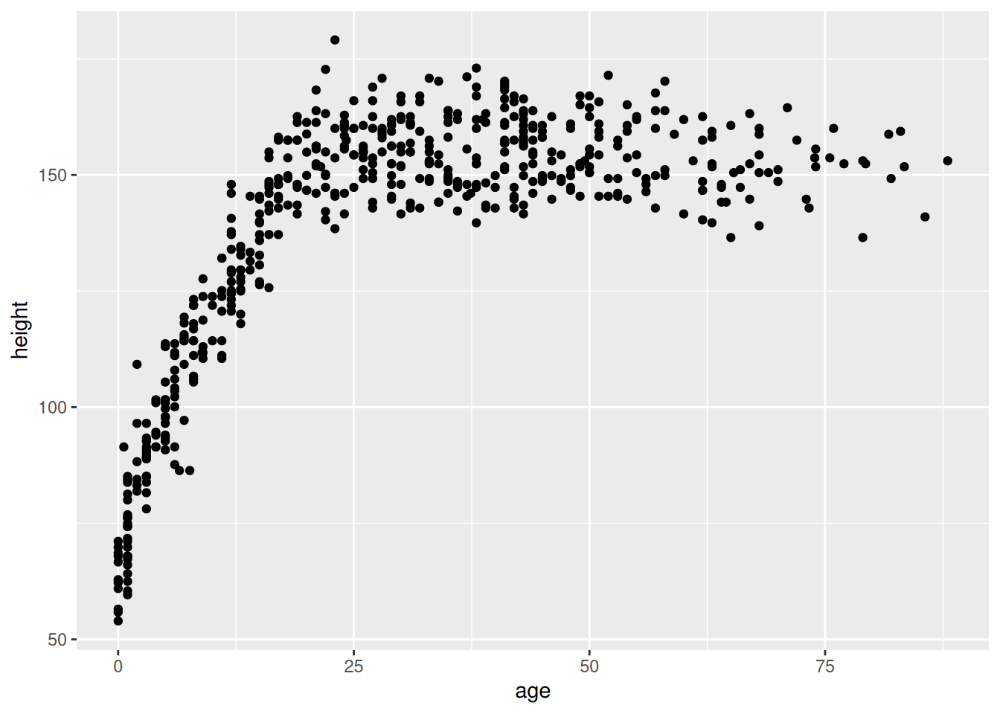
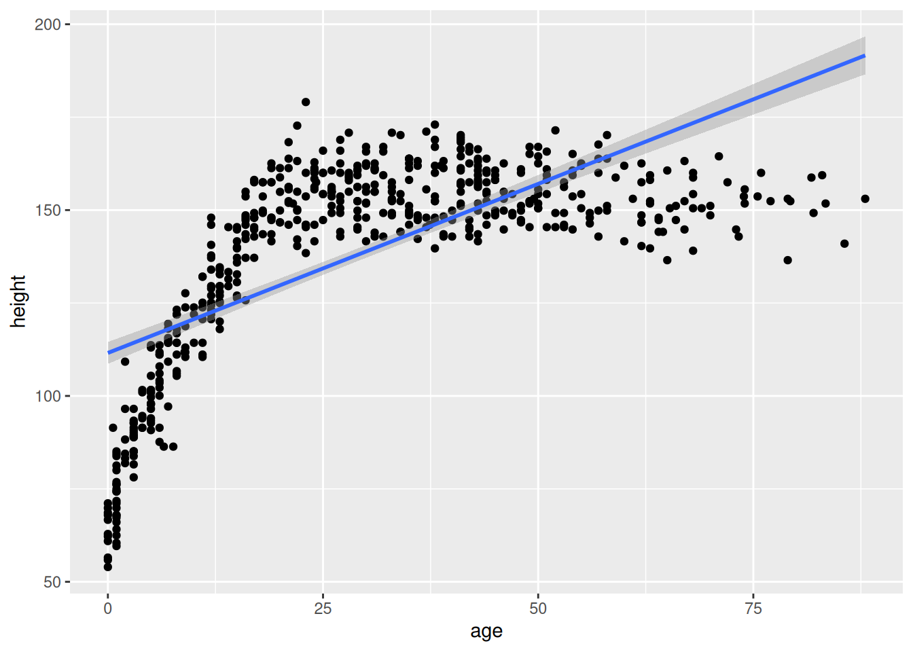
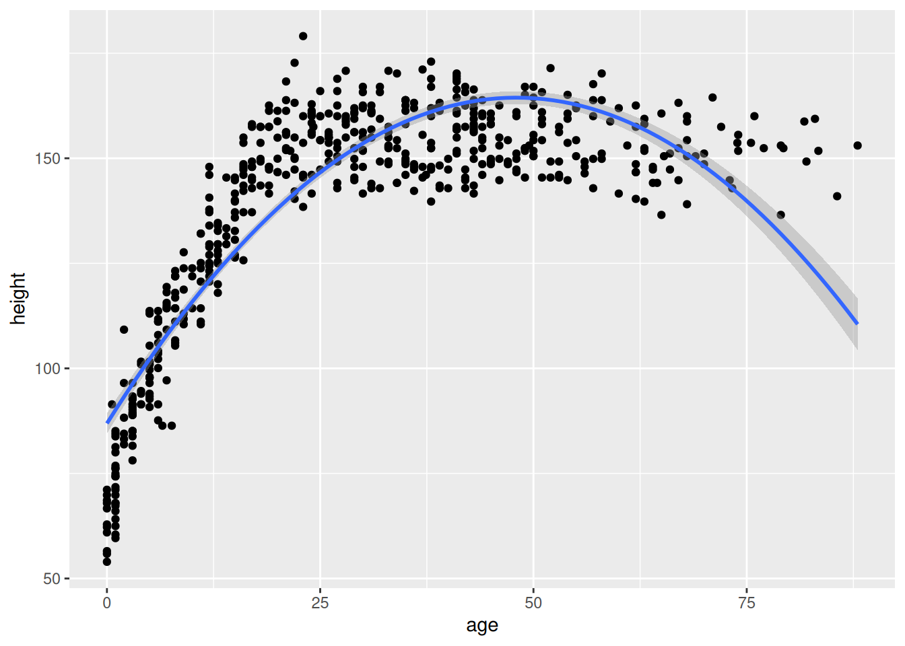
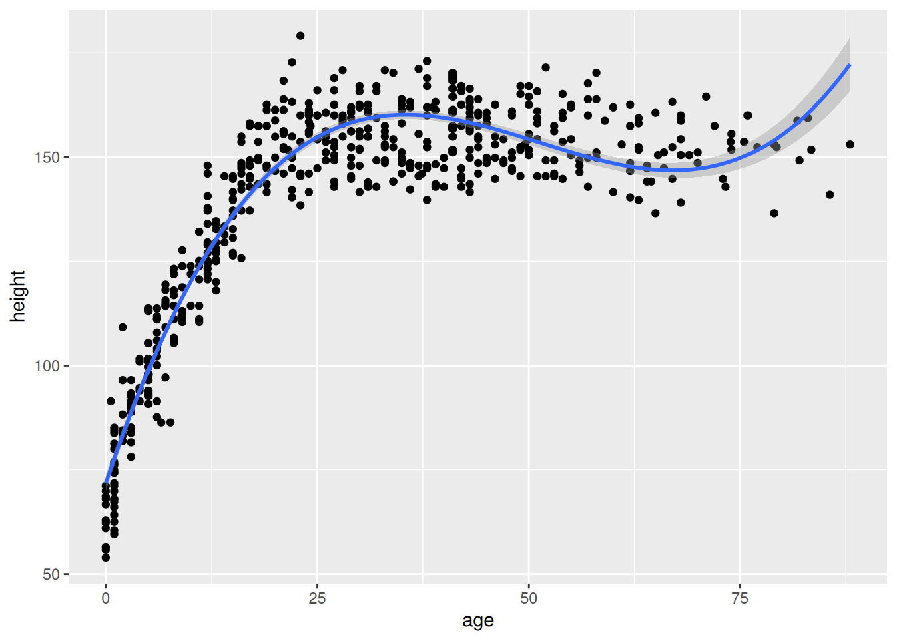
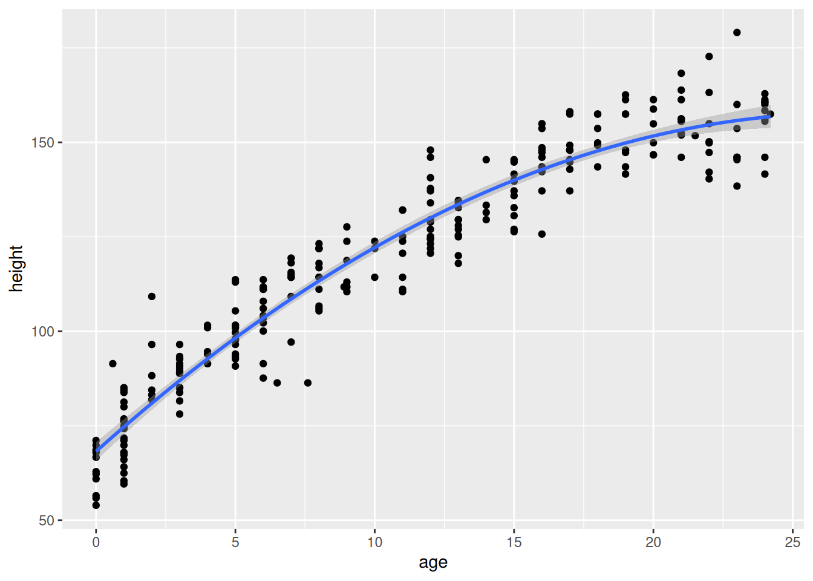

`geom_smooth()` using formula = 'y ~ x'
🚧 This section is being actively worked on. 🚧
The slides contain speaking notes that you can view by pressing ‘S’ on the keyboard.
At AalboR Statistical Hospital, clinicians have been reviewing data from patients who underwent exercise testing as part of their cardiac evaluation.
One of the variables recorded during the test is maximum heart rate. When looking at the data as a whole, the clinicians notice an interesting pattern: patients with heart disease tend to have lower maximum heart rates than patients without heart disease.
At first, this seems fairly straightforward.
During a case discussion, however, a cardiologist points out something that makes the pattern less convincing:
“Before we interpret this relationship, we should remember that maximum heart rate also changes with age. A maximum heart rate that seems unusually low for a younger patient may not be unusual for an older patient.”
This prompts the team to look more closely at the data.
They begin comparing patients of different ages and notice that the relationship between maximum heart rate and heart disease does not look quite the same everywhere in the dataset.
What initially appeared to be a simple relationship may depend on who the patient is.
You are asked to investigate this pattern in the hospital’s patient data. The challenge is to understand what happens to the relationship between maximum heart rate and heart disease when we consider patients conditional on their age — and whether the relationship itself changes across ages.
The findings may reveal something that is easy to miss when looking only at the overall data.
At AalboR Statistical Hospital, a new exercise-based cardiac assessment protocol has recently been proposed by some researchers as a screening tool for heart disease, suggesting that patients with lower max heart rate are more likely to have underlying heart disease. Based on this, some clinicians have started using the max heart rate during exercise as a quick indicator when scrrening patients.
However, during a recent internal meeting, a cardiologist raises a concern:
“I’m not convinced this applies to all patients. Especially older patients — their max heart rate is already very low. If that’s true, we could be biasing our screening in our older patients.
You are asked to explore the hospital’s patient data to assess whether the relationship between heart disease and max heart rate appears consistent across patients, or whether it differs depending on their age.
You are tasked with the decision: Should this new assessment approach be used broadly, or are there patient groups where it may be misleading?
At AalboR Statistical Hospital, a new exercise-based cardiac assessment protocol has recently been introduced following an initial data review suggesting that patients with lower max heart rate are more likely to have underlying heart disease. Based on this, some clinicians have started using the max heart rate during exercise as a quick indicator when evaluating chest pain patients.
However, during a recent internal meeting, a cardiologist raises a concern:
“I’m not convinced this applies to our patients. Especially those who develop chest pain during exercise — their heart rate response might behave differently. If that’s true, we could be misinterpreting results in a subgroup of patients. I want to see this association for myself”
You are asked to explore the hospital’s patient data to assess whether the relationship between Age and max heart rate — and the interpretation of max heart rate more generally — appears consistent across patients, or whether it differs depending on exercise-induced angina, sex, or other patient characteristics.
You are tasked with the decision: Should this new assessment approach be used broadly, or are there patient groups where it may be misleading?


AalboR Statistical Hospital internal review data at the meeting
Read this jurainfo.dk article on the effect of asbestos and smoking on cancer.
For the interested reader, there’s another tv2nord post on the same topic.
In a standard linear regression model, we make two important assumptions about how the predictors X relate to the response Y (1):
Each predictor affects Y independently of the other predictors. In other words, the effect of \(X_j\) does not depend on the values of the other X’s.
Example:
Suppose we predict the risk of lung cancer, \(Y\), using smoking status, \(X_1\), and asbestos exposure, \(X_2\). The additivity assumption says that the effect of asbestos exposure on cancer risk is exactly the same regardless of whether a person is a smoker or a non-smoker.
In our cancer example, this assumption is violated, because smoking and asbestos have a multiplicativ synergistic effect — the effect of asbestos is far more harmful to smokers than non-smokers.
The effect of a predictor on Y is constant across its range. A one-unit increase in \(X_j\) is assumed to produce the same change in Y, no matter what the current value of \(X_j\) is.
Example:
Suppose we predict the risk of lung cancer, \(Y\) using the number of hours working in an asbestos-filled environment \(X_j\). The linearity assumption says that the increase in cancer risk from your 1st hour to your 2nd hour of asbestos exposure is exactly the same as the increase in risk from your 19th hour to your 20th hour of exposure.
In reality, this assumption is violated here, because the biological damage of asbestos accumulates and worsens over time. This means that later years of exposure or long-term accumulation cause a much steeper, non-linear spike in cancer risk compared to the very first year).
We need to bend these assumptions in order to produce an interaction effect. You will see how we routinely do this using simple tricks of multiplication and squaring the predictor variables.
We could try splitting the dataset in two: make a linear model for the heart disease patenst and a linear model for the rest.
`geom_smooth()` using formula = 'y ~ x'
lm(MaxHR ~ Age, data = subset(hd_data,HD=="no"))
Call:
lm(formula = MaxHR ~ Age, data = subset(hd_data, HD == "no"))
Coefficients:
(Intercept) Age
213.928 -1.056 lm(MaxHR ~ Age, data = subset(hd_data,HD=="yes"))
Call:
lm(formula = MaxHR ~ Age, data = subset(hd_data, HD == "yes"))
Coefficients:
(Intercept) Age
160.0856 -0.3678 Now we have two different coefficients of Age. Now, how do we compare them to see whether they differ? 😅
We are interested in the estimand:
MaxHR~HD|Age
In words, is the effect of heart disease on max heart rate mediated by age?
Unfortunately, we have no estimate for this! As we divided the groups, we cannot compare them within our statistical mode.
Another concerning issue is that now our sample size is smaller and our model is more uncertain. As we split the dataset in two, the model cannot learn the association between max heart rate and age from all participants — even thought that would be more robust!
So this is not a good approach… Let’s explore another approach.
Recall the data from Section 17.3. We have already extensive knowledge from this dataset from Chapter 12. I will not reintroduce the dataset here.
We will use the lm() function for linear model and the {marginaleffects} package to make a quick {ggplot2} figure. While we could do this in {ggplot2}, the {marginaleffects} package has several tricks for making regression plots nice and simple to code and inspect.
Let’s go ahead and load the data, make a linear model and add our two variables of interest: age and heart disease.
{marginaleffects} package
condition.

Wait — the lines are completely parallel?!
This is exactly the additive and linear assumption: the same effect is constant for heart disease and for age (1).
But is this really the truth? Let’s plot the raw data with {ggplot2}:
hd_data |>
ggplot(aes(Age, MaxHR, color=HD)) +
geom_point() +
geom_smooth()`geom_smooth()` using method = 'loess' and formula = 'y ~ x'
This does not look parallel at all 👀
We need to allow some flexibility in our model to consider that fact that slopes might change dependent on heart disease.
In other words: > We need to bend the assumption of additive and linear variables (1).
Let’s start at the conceptual level.
Suppose we want to predict cancer using two variables:
We might first think:
But remember the additivity assumption: all predictors scale similarly on cancer risk with increasing exposure. Do you think it applies here? I’m not sure…
The association between lung cancer and asbestos exposure could be different conditioned on smoking status.
That is an interaction. And it is per definition violating the additivity assumption!
But how do we make a linear model capture non-additive relationships 👀
Think of this problem as not “breaking” the rules but rather “bending” the rules. We need some way to give the linear model extra flexibility to capture relationships that are not additive.
Think about ordinary multiplication first.
If you have:
\[ 2 \times 3 = 6 \]
and increase 2 to 4:
\[ 4 \times 3 = 12. \]
The result depends on both numbers. This process is linear conditioned on the other number being the same.
Now abstract to:
\[ X_1 \times X_2. \]
If \(X_1\) changes, the product changes — but how much it changes depends on \(X_2\).
For example:
| exposure (h) (\(X_1\)) | smoking status (\(X_2\)) | (\(X_1X_2\)) |
|---|---|---|
| 2 | yes = 1 | 2 |
| 3 | yes = 1 | 3 |
| 2 | no = 3 | 6 |
| 3 | no = 3 | 9 |
Notice what happens when exposure increases from 2 to 3:
So multiplication naturally creates a situation where:
The effect of one variable depends on the value of the other variable.
That is exactly what we mean by an interaction.
To allow this, we create a new variable:
\[ γ = X_1X_2 \] our new variable, γ (gamma), multiply the two variables together.
Notice that multiplication is non-additive now!
When we say linear regression, “linear” does not mean that we are forever doomed to model only linear and additive phenomena.
Instead, it means that the model coefficients are linear and additive — the numbers that the regression estimates.
You can think of γ as a new predictor — the variable is producing another linear coefficient. The regression can then use this new variable just like any other predictor.
This new variable consider the conditional relationship between two values. If \(β_1\) is small, the value might be small independent of \(β_2\). But if both \(β_1\) and \(β_2\) is large, the value might always be large (see Table 13.1)
There are therefore two different ideas:
Multiplication is useful because it naturally creates this dependency.
But how do we do that in R(eal life)?
We can literally make a new variable called age_by_hd using {dplyr}:
model_interact_manual <- hd_data |>
dplyr::mutate(
HD_num = ifelse(HD == "Yes", 1, 0),
age_by_hd = Age * HD_num
) |>
lm(MaxHR ~ Age + HD + age_by_hd,
data = _)
coef(model_interact_manual)(Intercept) Age HDYes age_by_hd
213.9282010 -1.0563804 -53.8425770 0.6885871 However, this is such a common routine in R that we don’t need to make the new variable. Instead, we can indicate this multiplication by using the following notation:
Age:HD
We will wait with interpreting the coefficients till the Section 13.10. For now, confirm that these numbers are identical to the model below.
model_interact <-
lm(MaxHR ~ Age + HD + Age:HD,
data = hd_data)
coef(model_interact)(Intercept) Age HDYes Age:HDYes
213.9282010 -1.0563804 -53.8425770 0.6885871 Finally, let’s take a look at the interaction plot:
plot_predictions(
model_interact,
condition = c("Age", "HD")
)
Cool! Now, the lines are definitely not parallel! This is in fact a trick for spotting interactions in plots.
You will also see other people using this notation Age * HD. This expands to Age + HD + Age:HD. However, we recommend using the Age:HD, as adding more variables and * notation quickly explodes.
model_interact <-
lm(MaxHR ~ Age * HD,
data = hd_data)In order to interpret the regression model, we need to recover the regression coefficient. From there, we will have to plug in numbers depending on what we’re interesting in estimating. This section goes through that process step by step.
Step 1: Recovering the regression equation
The first thing you can do to inspect a regression model is to use the summary() function:
model_interact |>
summary()
Call:
lm(formula = MaxHR ~ Age * HD, data = hd_data)
Residuals:
Min 1Q Median 3Q Max
-64.443 -10.748 2.496 12.370 54.775
Coefficients:
Estimate Std. Error t value Pr(>|t|)
(Intercept) 213.9282 8.5496 25.022 < 2e-16 ***
Age -1.0564 0.1600 -6.602 1.85e-10 ***
HDYes -53.8426 14.6636 -3.672 0.000285 ***
Age:HDYes 0.6886 0.2627 2.621 0.009213 **
---
Signif. codes: 0 '***' 0.001 '**' 0.01 '*' 0.05 '.' 0.1 ' ' 1
Residual standard error: 19.43 on 299 degrees of freedom
Multiple R-squared: 0.2856, Adjusted R-squared: 0.2784
F-statistic: 39.85 on 3 and 299 DF, p-value: < 2.2e-16Note that we are missing the confidence intervals. A better tool is parameters::model_parameters():
model_params <- model_interact |>
parameters::model_parameters()
model_params# A tibble: 4 × 9
Parameter Coefficient SE CI CI_low CI_high t df_error
<chr> <dbl> <dbl> <dbl> <dbl> <dbl> <dbl> <int>
1 (Intercept) 214. 8.55 0.95 197. 231. 25.0 299
2 Age -1.06 0.160 0.95 -1.37 -0.742 -6.60 299
3 HDYes -53.8 14.7 0.95 -82.7 -25.0 -3.67 299
4 Age:HDYes 0.689 0.263 0.95 0.172 1.21 2.62 299
# ℹ 1 more variable: p <dbl>This is great — we could make it a bit simpler and only look at the estimates (here abbreviated _est):
# A tibble: 1 × 4
intercept_est age_est hd_est age_hd_interact_est
<dbl> <dbl> <dbl> <dbl>
1 214. -1.06 -53.8 0.689It is straight forward relating these coefficients to the regression equation. Let’s plug the values in one at a time:
\[ \bar{Y} = 213.93 − 1.06 * age − 53.84 * hd + 0.689 * age\_by\_hd \]
where:
And there we have the regression equation 🎉
Step 2: Write separate equations for each group
For this case, we would want the estimate for a heart disease vs. no heart disease.
Recall that no heart disease was coded hd = 0:
\[ \bar{Y} = 213.93 − 1.06 * age − 53.84 * 0 + 0.689 * (age × 0) \] \(53.84 * 0\) cancels out — so does \(0.689 * 0\).
\(\bar{Y} = 213.93 − 1.06(age)\)
Interpretation:
For people without heart disease, each additional year of age is associated with about 1.06 units lower predicted outcome.
If we now look at the heart disease group (hd = 1) we get:
\[ \bar{Y} = 213.93 − 1.06(age) − 53.84 + 0.689(age × 1) \]
because \(53.84 * 1\) is 53.84 and \(0.689 * age × 1\) is \(0.689(age × 1)\).
We can combine the terms:
\(\bar{Y} = 160.09 − 0.371(age)\)
Interpretation:
For people with heart disease, each additional year of age is associated with only about 0.37 units lower predicted outcome. The age effect is less negative because of the positive interaction term.
Step 3: Plug in specific ages
Age = 40
No heart disease: \(213.93 − 1.06(40) = 171.67\)
Heart disease: \(160.09 − 0.368(40) = 145.37\)
Difference: \(145.37 − 171.67 = −26.30\)
At age 40, heart disease is associated with about 26 units (BPM max heart rate) lower predicted outcome.
Age = 70
No heart disease: \(213.93 − 1.06(70) = 140.00\)
Heart disease: \(160.09 − 0.368(70) = 134.34\)
Difference: \(134.34 − 140.00 = −5.66\)
At age 70, heart disease is associated with only about 6 units (BPM max heart rate) lower predicted outcome.
Step 4: Interpret the interaction
The interaction coefficient is: 0.689
This means that the effect of heart disease becomes 0.689 units (BPM max heart > rate) less negative for every additional year of age.
In other words: The age effect for the heart disease group groups shrinks by about 0.689 units for each additional year of age. It will eventually cross zero, at which point the direction of the association reverses.
We can again plug the values in to examine this:
Age HD=0 HD=1 Difference (HD−No HD)
40 171.67 145.37 -26.30
50 161.11 141.69 -19.41
60 150.54 138.01 -12.53
70 139.98 134.32 -5.66Often, graphics are easier to interpret than tables or coefficients. Let’s try to visualize the difference between max heart rate and having a heart disease when it change across age.
plot_slopes(model_interact, variables = "HD", condition = "Age") +
geom_hline(yintercept = 0, linetype = "dotted") +
labs(
y = "expected difference (MaxHR | HD)"
)
Consider for example the max heart rate and age problem. The interaction there has two equally valid phrasings.
These sound like different questions, but in a linear model they are mathematically identical.
To proof this to yourself, we’re going to do factor out the interaction term in the equation and show how this can be done in two ways.
The original model is:
\[ \text{max heart rate}_i \sim α + β_1age + β_2HD + β_3age\_by\_HD + ε\\ \]
For now, let’s make the model more compressed at the expense of nesting some parameters within a new variable γ (gamma). We will not consider the noise, ε, so we will only deal with the expected value, μ.
\[ \mu_i = \alpha + \gamma_i \,\text{age}_i + \beta_2 \,\text{HD}_i \]
where
\[ \gamma_i = \beta_1 + \beta_3 \,\text{HD}_i. \]
Here, \(\gamma_i\) is the effect of age for a patient with a given heart-disease status. The interaction allows this effect to differ between patients with and without heart disease.
Substituting the second equation into the first gives
\[ \mu_i = \alpha + (\beta_1 + \beta_3 \,\text{HD}_i)\,\text{age}_i + \beta_2 \,\text{HD}_i. \]
The substitution makes explicit where the interaction enters the model.
Expanding:
\[ \mu_i = \alpha + \beta_1 \,\text{age}_i + \beta_3 \,\text{age}_i \times \text{HD}_i + \beta_2 \,\text{HD}_i. \]
The interaction term is the same regardless of which variable we initially treated as the predictor.
Now collect the terms containing \(\text{HD}_i\):
\[ \mu_i = \alpha + \beta_1 \,\text{age}_i + (\beta_2 + \beta_3 \,\text{age}_i)\,\text{HD}_i. \]
This is the same model, but now the coefficient of \(\text{HD}_i\) is allowed to depend on age.
Define
\[ G_i = \beta_2 + \beta_3 \,\text{age}_i. \]
Then
\[ \mu_i = \alpha + \beta_1 \,\text{age}_i + G_i\,\text{HD}_i. \]
The quantity \(G_i\) plays the same role for the heart-disease effect that \(\gamma_i\) played for the age effect.
The interaction coefficient \(\beta_3\) simultaneously describes
In a linear model, interactions are symmetric. The choice of which variable is called the “predictor” and which is called the “moderator” is often a matter of interpretation rather than mathematics.
Until now, we’ve used one continuous and one dichotomous variable.
But what if we have two continuous variables that interaction?
m <- lm(MaxHR ~ Age + Chol + Age:Chol, data=hd_data)
summary(m)
Call:
lm(formula = MaxHR ~ Age + Chol + Age:Chol, data = hd_data)
Residuals:
Min 1Q Median 3Q Max
-64.849 -11.751 3.893 15.268 44.473
Coefficients:
Estimate Std. Error t value Pr(>|t|)
(Intercept) 251.955403 36.051159 6.989 1.81e-11 ***
Age -2.004447 0.632237 -3.170 0.00168 **
Chol -0.194792 0.149943 -1.299 0.19491
Age:Chol 0.004053 0.002595 1.562 0.11937
---
Signif. codes: 0 '***' 0.001 '**' 0.01 '*' 0.05 '.' 0.1 ' ' 1
Residual standard error: 20.96 on 299 degrees of freedom
Multiple R-squared: 0.1684, Adjusted R-squared: 0.16
F-statistic: 20.18 on 3 and 299 DF, p-value: 6.173e-12The interpretation remains the same — but now that both values have infinitely many possible values, it suddenly becomes difficult to plot and show all the ranges 😅
A nice trick is to do a triptych plot. Triptych art is
“a work of art (usually a panel painting) that is divided into three sections, or three carved panels that are hinged together and can be folded shut or displayed open. It is therefore a type of polyptych, the term for all multi-panel works. The middle panel is typically the largest and flanked by two smaller related works, although there are triptychs of equal-sized panels. The form can also be used for pendant jewelry.”
Here is an example:
# Calculate Age values at -2 SD, Mean, and +2 SD
age_values <- c(
"-1 SD" = mean(hd_data$Age, na.rm = TRUE) - (sd(hd_data$Age, na.rm = TRUE) * 1),
"Mean" = mean(hd_data$Age, na.rm = TRUE),
"+1 SD" = mean(hd_data$Age, na.rm = TRUE) + (sd(hd_data$Age, na.rm = TRUE) * 1)
)
# Create prediction data
plot_data <- expand_grid(
Chol = seq(
min(hd_data$Chol, na.rm = TRUE),
max(hd_data$Chol, na.rm = TRUE),
length.out = 100
),
age_group = names(age_values)
) |>
mutate(
Age = age_values[age_group],
age_group = factor(
age_group,
levels = c("-1 SD", "Mean", "+1 SD")
)
)
# Fit model
model <- lm(MaxHR ~ Age * Chol, data = hd_data)
# Add predicted MaxHR
plot_data <- plot_data |>
mutate(
predicted_MaxHR = predict(model, newdata = plot_data)
)
# Plot
ggplot(plot_data, aes(x = Chol, y = predicted_MaxHR)) +
geom_line(linewidth = 1) +
facet_wrap(
~ age_group,
labeller = as_labeller(
c(
"-1 SD" = "-1 SD of Age",
"Mean" = "Mean Age",
"+1 SD" = "+1 SD of Age"
)
)
) +
labs(
x = "Chol",
y = "Maximum heart rate (MaxHR)",
title = "Predicted Maximum Heart Rate by Chol",
subtitle = "At −1 SD, Mean, and +1 SD of Age"
) +
theme_minimal()
Recall the symmetry of interaction. The regression model could be interpreted in the other direction: max heart rate predicted by age conditioned on cholesterole level.
Note that the ±1 SD is an arbitrary - but often reasonable - choice. I’ve use ±2 SD for the next plot:
# Calculate Chol values at -1 SD, Mean, and +1 SD
chol_values <- c(
"-2 SD" = mean(hd_data$Chol, na.rm = TRUE) - (sd(hd_data$Chol, na.rm = TRUE) *2),
"Mean" = mean(hd_data$Chol, na.rm = TRUE),
"+2 SD" = mean(hd_data$Chol, na.rm = TRUE) + (sd(hd_data$Chol, na.rm = TRUE)*2)
)
# Create prediction data
plot_data <- expand_grid(
Age = seq(
min(hd_data$Age, na.rm = TRUE),
max(hd_data$Age, na.rm = TRUE),
length.out = 100
),
chol_group = names(chol_values)
) |>
mutate(
Chol = chol_values[chol_group],
chol_group = factor(
chol_group,
levels = c("-2 SD", "Mean", "+2 SD")
)
)
# Fit model
model <- lm(MaxHR ~ Age * Chol, data = hd_data)
# Add predicted MaxHR
plot_data <- plot_data |>
mutate(
predicted_MaxHR = predict(model, newdata = plot_data)
)
# Plot
ggplot(plot_data, aes(x = Age, y = predicted_MaxHR)) +
geom_line(linewidth = 1) +
facet_wrap(
~ chol_group,
labeller = as_labeller(
c(
"-2 SD" = "-2 SD of Chol",
"Mean" = "Mean Chol",
"+2 SD" = "+2 SD of Chol"
)
)
) +
labs(
x = "Age",
y = "Maximum heart rate (MaxHR)",
title = "Predicted Maximum Heart Rate by Age",
subtitle = "At −2 SD, Mean, and +2 SD of Chol"
) +
theme_minimal()
Recall the linearity assumption (1).
Everything are not linear, is it? Consider for example the height of people:

As a human, you increase you height quite dramatically in childhood — but this inevitably comes to an end later in life. So how can we model this non-linear development?
The answer is surprisingly simple — we can compute a new variable ϕ (phi) that is the original variable squared (i.e. \(ϕ = X_1^2\)). If we do this for age, we can get \(ϕ = age^2\). But nothing stops us from taking the cube (age^3$) or beyond! This is called a polynomial and looks like this:
| Polynomial degree | Regression model |
|---|---|
| 1 | \(y = \beta_0 + \beta_1 x\) |
| 2 | \(y = \beta_0 + \beta_1 x + \beta_2 x^2\) |
| 3 | \(y = \beta_0 + \beta_1 x + \beta_2 x^2 + \beta_3 x^3\) |
| 4 | \(y = \beta_0 + \beta_1 x + \beta_2 x^2 + \beta_3 x^3 + \beta_4 x^4\) |
height_data |>
ggplot(aes(age,height)) +
geom_point() +
geom_smooth(method = "lm")
height_data |>
ggplot(aes(age,height)) +
geom_point() +
geom_smooth(method = "lm", formula = y ~ x + I(x^2)) # I is function for "as-is" to make math operation as is.
height_data |>
ggplot(aes(age,height)) +
geom_point() +
geom_smooth(method = "lm", formula = y ~ x + I(x^2) + I(x^3)) # I is function for "as-is" to make math operation as is.
height_data |>
dplyr::filter(age<25) |>
ggplot(aes(age,height)) +
geom_point() +
geom_smooth(method = "lm", formula = y ~ x + I(x^2)) # I is function for "as-is" to make math operation as is.



Demographic data from Kalahari !Kung San people collected by Nancy Howell
There is no free lunch — and the price for a non-linear linear model is that we now have more coefficients for the same variable 👀
Take a look:
lm(height ~ age + I(age^2) + I(age^3),
data=height_data) |>
parameters::parameters()# A tibble: 4 × 9
Parameter Coefficient SE CI CI_low CI_high t df_error
<chr> <dbl> <dbl> <dbl> <dbl> <dbl> <dbl> <int>
1 (Intercept) 71.8 1.05e+0 0.95 6.97e+1 7.38e+1 68.6 540
2 age 6.05 1.27e-1 0.95 5.80e+0 6.30e+0 47.5 540
3 I(age^2) -0.130 4.00e-3 0.95 -1.38e-1 -1.23e-1 -32.6 540
4 I(age^3) 0.000848 3.44e-5 0.95 7.81e-4 9.16e-4 24.6 540
# ℹ 1 more variable: p <dbl>So which which coefficient should we report?! 😅
You should report all — but non of them can be interpreted in isolation. In fact, you need to plug all values in simultaneously. Now, imagine if you also had an interaction with weight 👀
Think for yourself for 3 minutes:
Talk to your neiggbour and try to come to agreement.
In fact, many models become increasingly difficult to a point where eyeballing model coefficients is just madness!
Take this example:
five_way_model <- glm(
as.factor(HD) ~ Chol * RestBP * MaxHR * ChestPain,
family = binomial,
data=hd_data
)
parameters::parameters(five_way_model)[,c(1,2)] |> print(n=Inf)# Fixed Effects
Parameter | Coefficient
---------------------------------------------------
(Intercept) | -39.08
Chol | 0.10
RestBP | 0.34
MaxHR | 0.19
ChestPainnonanginal | -24.81
ChestPainnontypical | -321.23
ChestPaintypical | 263.16
Chol:RestBP | -6.82e-04
Chol:MaxHR | -4.17e-04
RestBP:MaxHR | -1.71e-03
Chol:ChestPainnonanginal | 0.11
Chol:ChestPainnontypical | 1.33
Chol:ChestPaintypical | -1.08
RestBP:ChestPainnonanginal | 0.15
RestBP:ChestPainnontypical | 2.23
RestBP:ChestPaintypical | -2.51
MaxHR:ChestPainnonanginal | 0.23
MaxHR:ChestPainnontypical | 1.90
MaxHR:ChestPaintypical | -1.77
Chol:RestBP:MaxHR | 2.91e-06
Chol:RestBP:ChestPainnonanginal | -7.17e-04
Chol:RestBP:ChestPainnontypical | -9.36e-03
Chol:RestBP:ChestPaintypical | 0.01
Chol:MaxHR:ChestPainnonanginal | -1.06e-03
Chol:MaxHR:ChestPainnontypical | -8.01e-03
Chol:MaxHR:ChestPaintypical | 7.64e-03
RestBP:MaxHR:ChestPainnonanginal | -1.48e-03
RestBP:MaxHR:ChestPainnontypical | -0.01
RestBP:MaxHR:ChestPaintypical | 0.02
Chol:RestBP:MaxHR:ChestPainnonanginal | 6.95e-06
Chol:RestBP:MaxHR:ChestPainnontypical | 5.66e-05
Chol:RestBP:MaxHR:ChestPaintypical | -6.66e-05Oh my, that’s a lot of coefficients! 👀
How in the world are we ever going to interpret this monster?! And now it’s a logistic regression, so the coefficients are in log-odds! 😅
Truth is — we can’t infer much (if anything at all) from the coefficients alone. We would need to do a marginal effect estimate, which we’ll cover in Chapter 15.
The danger of
library(sjPlot)
Attaching package: 'sjPlot'The following object is masked from 'package:ggplot2':
set_themedata(efc, package="sjPlot")
m <- lm(
neg_c_7 ~ c12hour + e16sex + c12hour:e16sex,
data = efc
)
# fit model with 3-way-interaction
fit <- lm(neg_c_7 ~ c12hour * barthtot * e16sex, data = efc)
# select only levels 30, 50 and 70 from continuous variable Barthel-Index
sjPlot::plot_model(fit, type = "pred", terms = c("c12hour", "barthtot [30,50,70]", "e16sex"))
where:
neg_c_7 = caregiver burden (outcome) c12hour = hours of care provided sex = caregiver sex
Then ask the two interaction questions:
How much does the association between caregiving hours and burden depend on caregiver sex?
and
How much does the difference between male and female caregivers depend on caregiving hours?
Students usually perceive these as different questions, but the interaction coefficient is the same parameter in both cases.
library(marginaleffects)
marginaleffects::slopes(
fit,
variables = "c12hour",
by = "e16sex"
)
e16sex Estimate Std. Error z Pr(>|z|) S 2.5 % 97.5 %
1 0.01153 0.00448 2.57 0.0101 6.6 0.002740 0.0203
2 0.00748 0.00411 1.82 0.0688 3.9 -0.000576 0.0155
Term: c12hour
Type: response
Comparison: dY/dX#marginaleffects::avg_slopes(
# fit,
# variables = "c12hour",
# by = list("c12hour", "barthtot" = c(30,50,70))
#)
marginaleffects::plot_slopes(
fit,
variables = "c12hour",
condition = list("c12hour", "barthtot" = c(30,50,70))
)
marginaleffects::plot_predictions(
fit,
variables = "c12hour",
condition = list("c12hour", "barthtot" = c(30,50,70))
)
marginaleffects::comparisons(
fit,
variables = "e16sex",
by = "c12hour"
)
c12hour Estimate Std. Error z Pr(>|z|) S 2.5 % 97.5 %
4 -0.01619 0.345 -0.0469 0.9626 0.1 -0.693 0.660
5 0.00486 0.370 0.0131 0.9895 0.0 -0.720 0.730
6 -0.00501 0.355 -0.0141 0.9888 0.0 -0.701 0.691
7 -0.02262 0.334 -0.0677 0.9461 0.1 -0.678 0.633
8 -0.02471 0.331 -0.0746 0.9405 0.1 -0.674 0.624
--- 54 rows omitted. See ?print.marginaleffects ---
154 -0.31638 1.057 -0.2993 0.7647 0.4 -2.388 1.755
160 -0.99013 0.678 -1.4608 0.1441 2.8 -2.319 0.338
161 -1.86477 0.839 -2.2221 0.0263 5.3 -3.510 -0.220
162 -1.97734 0.915 -2.1610 0.0307 5.0 -3.771 -0.184
168 -1.41689 0.663 -2.1355 0.0327 4.9 -2.717 -0.116
Term: e16sex
Type: response
Comparison: +1set.seed(1)
drug_data <- expand_grid(
dose = 0:10,
receptor = seq(1, 10, by = 1)
) |>
mutate(effect = .2*dose + .1*receptor +
.10*dose*receptor +
rnorm(n(), 0, 1))
m <- lm(effect ~ dose * receptor, data = drug_data)
summary(m)
Call:
lm(formula = effect ~ dose * receptor, data = drug_data)
Residuals:
Min 1Q Median 3Q Max
-2.30766 -0.63712 0.00076 0.58052 2.32423
Coefficients:
Estimate Std. Error t value Pr(>|t|)
(Intercept) 0.082426 0.351218 0.235 0.81490
dose 0.196889 0.059367 3.316 0.00125 **
receptor 0.101370 0.056604 1.791 0.07617 .
dose:receptor 0.102043 0.009568 10.665 < 2e-16 ***
---
Signif. codes: 0 '***' 0.001 '**' 0.01 '*' 0.05 '.' 0.1 ' ' 1
Residual standard error: 0.9115 on 106 degrees of freedom
Multiple R-squared: 0.9237, Adjusted R-squared: 0.9215
F-statistic: 427.8 on 3 and 106 DF, p-value: < 2.2e-16drug_data |>
mutate(receptor_group = cut(receptor, 3)) |>
ggplot(aes(dose, effect)) +
geom_point() +
geom_smooth(method = "lm", se = FALSE) +
facet_wrap(~ receptor_group)`geom_smooth()` using formula = 'y ~ x'
#########
set.seed(123)
dat <- expand_grid(
frailty = c(-1, 0, 1),
dose = c(-1, 0, 1),
id = 1:9
) %>%
mutate(
change_pf = 35 +
25 * dose -
18 * dose^2 -
8 * frailty +
5 * dose * frailty -
7 * dose^2 * frailty +
rnorm(n(), 0, 7)
)
# Fitted curves at -1, 0, +1 SD frailty
pred <- expand_grid(
dose = seq(-1.5, 1.5, length.out = 100),
frailty = c(-1, 0, 1)
) %>%
mutate(
change_pf = 35 +
25 * dose -
18 * dose^2 -
8 * frailty +
5 * dose * frailty -
7 * dose^2 * frailty,
frailty = factor(
frailty,
levels = c(-1, 0, 1),
labels = c("Low frailty", "Mean frailty", "High frailty")
)
)
ggplot(dat, aes(dose, change_pf, colour = factor(frailty))) +
geom_point(size = 2.5) +
geom_line(
data = pred,
aes(dose, change_pf, colour = frailty),
linewidth = 1.2
) +
labs(
x = "Chemotherapy dose intensity (SD)",
y = "Change in physical functioning",
colour = "Frailty"
) +
theme_minimal(base_size = 13)